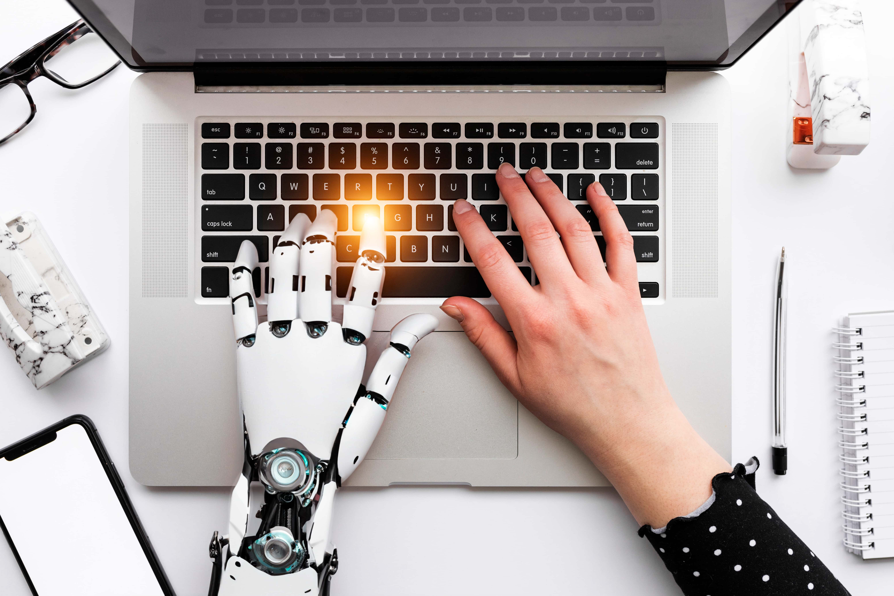

¿Cuál será el camino que tomará la IA en el tiempo?
La inteligencia artificial está evolucionando rápidamente, transformando industrias enteras y nuestras vidas cotidianas. Pero, ¿qué depara el futuro para esta tecnología? En esta sección, exploraremos las tendencias emergentes y las posibilidades futuras de la IA.
Con la automatización y los avances en la inteligencia artificial, muchas industrias están viendo una reducción en la demanda de mano de obra humana. Sin embargo, esto también crea nuevas oportunidades para trabajos especializados en la gestión y desarrollo de IA.
La IA está revolucionando el campo de la medicina, con aplicaciones en diagnóstico, tratamiento personalizado y descubrimiento de fármacos. En el futuro, podríamos ver la creación de sistemas de salud completamente autónomos, capaces de tomar decisiones médicas complejas sin la intervención humana.
Una de las visiones más discutidas sobre el futuro de la IA es la singularidad tecnológica, un punto en el que las máquinas superarán la inteligencia humana y comenzarán a tomar decisiones por sí mismas. Aunque esta idea sigue siendo muy especulativa, plantea importantes preguntas éticas y sociales.